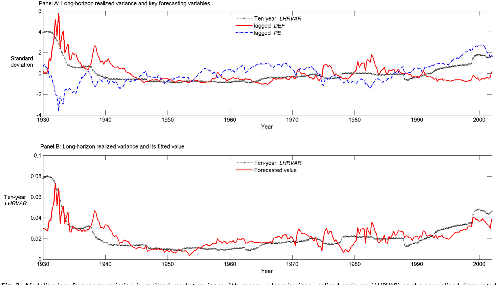
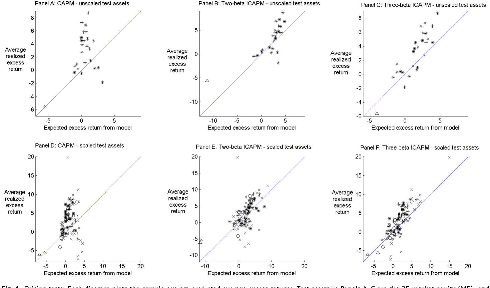
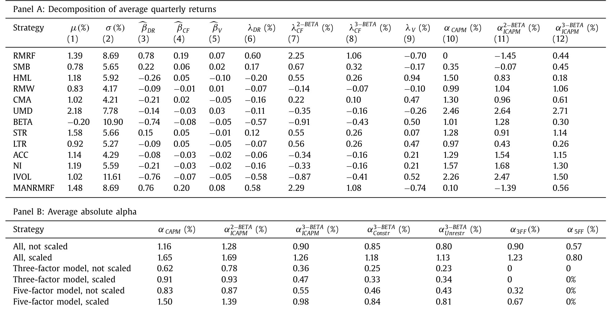
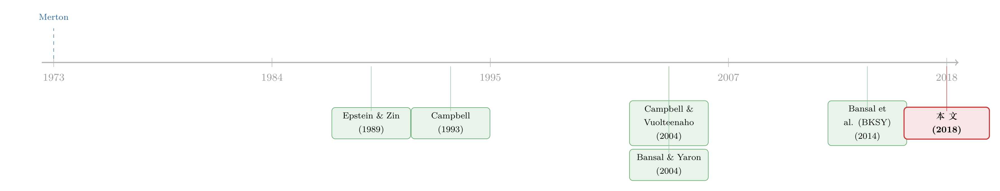

市场之外，长期投资者还在怕什么？——给 CAPM 装上第三颗「会怕波动」的心
本文读的是 Campbell, Giglio, Polk & Turley (2018, JFE)：一个「保守的长期投资者」之所以甘愿持有大盘、而不去超配价值股和高 beta 股，是因为他同时害怕两件事——预期收益下滑、以及波动率上升；成长股与高 beta 股恰好对冲了后者。把这层「怕波动」写进 Merton 的跨期 CAPM，就多出一个波动率 beta；而这个模型只需要一个自由参数（风险厌恶 γ≈7）就能给三个因子同时定价。论文还给出一条新证据：与违约利差绑定的低频波动率，确实在股票横截面上被定了价。
1 一个老问题：为什么「市场组合」就够了？
先抛一个让无数资产定价学者夜不能寐的悖论。
教科书告诉我们，承担市场风险（beta）应当有回报。可是过去几十年的数据偏偏唱反调：高 beta 股票的平均收益并不高，甚至偏低；与此同时，价值股（value stocks）稳稳跑赢成长股（growth stocks）。如果你是个聪明的投资者，看到价值股、低 beta 股「白给」的超额收益，为什么不重仓它们、反而老老实实拿着大盘指数？
标准的单期 CAPM 在这里完全失语。它会说：你应该去套这些利。可现实里，养老金、捐赠基金这些长期机构投资者，偏偏大量地、长期地只持有市场组合。他们是傻吗？
本文的回答是：不傻，而且恰恰相反——他们是因为想得够长远，才不去套这个利。
这篇论文的全部张力，都拧在这一句话上：对一个单期投资者「白给」的收益，对一个长期投资者可能是「有代价」的。代价藏在两类「投资机会恶化」里。
2 长期投资者的两种恐惧
跨期资产定价（intertemporal asset pricing）最深刻的洞见，来自 Merton (1973)：一个长期投资者，不仅在乎自己财富的水平，还同样在乎这笔财富能挣多少回报。在一个收益率恒定的简单世界里，可持续消费 = 财富 × 回报率，两个因子地位完全对等。
问题是，现实世界的「投资机会」（investment opportunities）会变。它可以从两个方向恶化：
- 预期收益下滑：以后市场没那么好赚了；
- 波动率上升：以后市场更颠簸了。
一个相对风险厌恶大于 1 的「保守长期投资者」，会去寻找跨期对冲（intertemporal hedge）——那些在投资机会变差时反而表现好的资产。首先，这解释了 CV(2004) 那个著名的「价值-成长」故事：成长股在预期市场收益下滑时表现好，所以它对冲了第一种恐惧，于是长期投资者愿意接受它较低的平均收益。
接着，一个自然的问题是：第二种恐惧呢？ 此前这条文献几乎把波动率的时变性完全忽略了——而数据里波动率明明在剧烈地变。本文要补的，正是这块短板：把随机波动率（stochastic volatility）请进 ICAPM，让模型长出第三颗心。
3 模型：把「怕波动」一步步推导出来
这是一篇有模型的论文，值得把推导一步步走清楚。我们的目标，是写出对数随机贴现因子（stochastic discount factor, SDF）的创新项 \(m_{t+1}-E_t m_{t+1}\)。
第一步：偏好与 SDF。 投资者具有 Epstein–Zin (1989) 偏好，价值函数写成
$$V_t = \left\{(1-\delta)C_t^{\frac{1-\gamma}{\theta}} + \delta\left(E_t\left[V_{t+1}^{1-\gamma}\right]\right)^{1/\theta}\right\}^{\frac{\theta}{1-\gamma}}$$
其中 \(\delta\) 是贴现因子、\(\gamma\) 是风险厌恶、\(\psi\) 是跨期替代弹性（EIS），并定义 \(\theta=(1-\gamma)/(1-1/\psi)\)。对应的 SDF 为
$$M_{t+1} = \left(\delta\left(\frac{C_{t+1}}{C_t}\right)^{-1/\psi}\right)^{\theta}\left(\frac{W_t-C_t}{W_{t+1}}\right)^{1-\theta}$$
第二步：把消费换成收益。 在条件联合对数正态的假设下，取对数线性近似，并用预算约束把消费替换掉（这是 Campbell (1993) 的经典技巧），可得 SDF 创新的表达式：
$$m_{t+1}-E_t m_{t+1} = -\frac{\theta}{\psi}(\Delta c_{t+1}-E_t\Delta c_{t+1}) + (\theta-1)(r_{t+1}-E_t r_{t+1})$$ $$= \frac{\theta}{\psi}(h_{t+1}-E_t h_{t+1}) - \gamma(r_{t+1}-E_t r_{t+1})$$
这里 \(h_{t+1}=\ln(W_{t+1}/C_{t+1})\) 是对数财富-消费比，它正是决定跨期对冲需求的那个变量。
第三步：把 \(h\) 向前求解。 用差分方程把 \(h\) 的创新解到无穷远，得到（沿用 CV 的记号）
$$h_{t+1}-E_t h_{t+1} = (\psi-1)\,N_{DR,t+1} + \frac{1}{2}\theta\,N_{RISK,t+1}$$
其中 \(N_{DR}\) 是对未来收益的修正（贴现率新闻），\(N_{RISK}\) 是对未来「风险」（未来对数收益方差 + 对数 SDF）的修正。关键的反转在这里出现：在 CV 的同方差（homoskedastic）世界里，\(N_{RISK}\) 是常数、悄无声息；可一旦允许波动率随机变动，它就活了过来，成了第三个独立的风险来源。
第四步：三 beta 的 SDF。 把上式代回，并用 Campbell–Shiller 分解 \(r_{t+1}-E_t r_{t+1}=N_{CF,t+1}-N_{DR,t+1}\)，最终得到本文的核心方程：
读懂这个方程，就读懂了全文。同一份市场风险，被拆成两类：对基本面（现金流）的坏消息，定价高；对贴现率的坏消息，定价低——这就是 CV 的「坏 beta、好 beta」。本文添的，是第三项：当投资者预期未来波动会上升时，SDF 走高（边际效用高）。于是，一个在「波动预期上升」时还能给你正收益的资产，是宝贵的对冲品，因而平均收益更低。
注意一个漂亮的性质：三个因子的风险价格只取决于一个自由参数——长期投资者的风险厌恶 γ（外加可由 VAR 估出的参数）。这让本文天然免疫 Daniel–Titman、Lewellen–Nagel–Shanken (2010) 对「多自由参数模型能虚假拟合低维因子结构」的批评。一个参数，三个 beta，不许调。
4 随机波动率：用一个标量把所有冲击「同呼吸」
要把 \(N_{RISK}\) 真正落地，得给数据生成过程一个结构。本文假设经济由一阶 VAR 描述：
$$x_{t+1} = \bar{x} + \Gamma(x_t-\bar{x}) + \sigma_t u_{t+1}$$
\(x_{t+1}\) 是状态变量向量，第一个元素是市场收益 \(r_{t+1}\)，第二个元素是市场收益的条件方差 \(\sigma_{t+1}^2\)，其余变量帮助预测一、二阶矩。最关键的一步是那个标量假设：单一的 \(\sigma_t^2\)（市场收益的条件方差）同时主宰所有冲击的方差——市场、波动率本身、所有状态变量的创新，方差都按同一比例伸缩。这让随机波动率过程变成仿射（affine）的，正如 Heston (1993)。
在这个结构下，风险新闻正比于市场方差新闻 \(N_V\)：
$$N_{RISK,t+1} = \omega\rho\,e_2'(I-\rho\Gamma)^{-1}\sigma_t u_{t+1} = \omega\,N_{V,t+1}$$
而那个比例系数 \(\omega\)，是风险厌恶 \(\gamma\) 的非线性函数，满足一个二次方程：
$$\omega\sigma_t^2 = (1-\gamma)^2\mathrm{Var}_t[N_{CF,t+1}] + \omega(1-\gamma)\mathrm{Cov}_t[N_{CF,t+1},N_{V,t+1}] + \omega^2\tfrac{1}{4}\mathrm{Var}_t[N_{V,t+1}]$$
于是 SDF 创新的可估形式变成：
$$m_{t+1}-E_t m_{t+1} = -\gamma\,N_{CF,t+1} - [-N_{DR,t+1}] + \tfrac{1}{2}\omega\,N_{V,t+1}$$
这里有个迷人的副产品。二次方程未必有实根——当且仅当
$$\gamma \le 1 - \frac{1}{\rho_n-1}\frac{\sigma_{cf}}{\sigma_v}$$
时，\(\omega\) 才有实解。给定本文的 VAR 估计，实解只在 \(\gamma\) 落在 0 到 7.2 之间时存在。换句话说，模型自带一个风险厌恶的「天花板」。论文证明，这个解的不存在并非对数线性近似的人为产物，而是模型的深层特征：当价值函数对波动率越来越敏感、这种敏感又反过来放大波动时，正反馈一旦过强，价值函数本身就不复存在了。
5 数据与新证据：低频波动率，藏在违约利差里
本文 VAR 系统里除了股票收益与已实现方差（realized variance），还放进了两个金融指标：平滑市盈率（price-smoothed earnings ratio）和违约利差（default spread，低评级减高评级债券的收益率之差）。
然后，论文抛出一个此前少有人讲的事实：波动率有一个被违约利差锁定的低频成分。直觉很朴实——风险债券相当于卖空了「长期违约」这个期权，所以风险债券的投资者在定信用利差时，天然会把波动率的长期成分纳入考量。只盯着过去股票收益的单变量波动率模型（GARCH、已实现波动率滤波等），恰恰滤不出这个低频成分。而它，对最在乎「投资机会持久变化」的长期投资者，至关重要。
下图把这个低频成分画了出来：用违约利差等变量构造的长期已实现方差（LHRVAR），刻画出波动率中那条缓慢起伏的曲线。

Figure 3: Modeling low-frequency variation in realized market variance: We measure long-horizon realized variance ( LHRVAR ) as the annualized discoun
有了这套模型，论文回头去解释那些异象。结果是：
- 价值 vs 成长：γ≈7 的中等风险厌恶，就足以让长期投资者打消超配价值股的念头。成长股同时对冲了「预期收益下滑」与「波动率上升」两种恐惧。
- 高 beta vs 低 beta：高 beta 股票之所以对保守的长期投资者有吸引力，是因为过去 50 年里它们对冲了波动率的上升。这就帮着解开了「市场 beta 在近几十年回报极低」这个谜（关于 beta 异象与波动率的纠缠，另见《波动率之谜，藏在 beta 异象的「时机」里》）。
- 一个时变的符号：价值减成长组合的波动率 beta 始终为负；而整个大盘的波动率 beta，在近几十年里从负转正——这正是单期视角看不到、却对长期投资者举足轻重的细节。
把样本平均收益与模型预测对在一张图上，三 beta 模型的定价表现相当贴合 45 度线：

Figure 4: Pricing tests: Each diagram plots the sample against predicted average excess returns. Test assets in Panels A–C are the 25 market equity (M
论文进一步把两 beta 模型（CV）与三 beta 模型放在一批知名股票异象上做正面较量，看波动率这第三个 beta 到底贡献了多少解释力。

Table 5: analyzes a number of well-known equity parameter estimates of the two-beta and three-beta mod-
值得一提的是，本文与同期的 BKSY（Bansal, Kiku, Shaliastovich & Yaron, 2014）形成鲜明对照：BKSY 在长期风险（long-run risk）框架下也研究随机波动率，但用的是同方差的波动率过程，结论是波动率风险对横截面溢价影响甚微、且价值-成长组合的波动率 beta 为正、大盘为负。本文用异方差的仿射结构，得到几乎相反的图景——波动率风险很重要，价值-成长波动率 beta 始终为负，大盘波动率 beta 近年转正。不同的建模假设，导出不同的世界。
6 文献脉络
这条研究的来路，是一条从「消费」一路走向「收益与波动」的暗线。
源头是 Merton (1973)：长期投资者会持有跨期对冲资产。接着，Epstein & Zin (1989) 把风险厌恶与跨期替代弹性拆开，给了后续一切以偏好基础。然后，真正关键的一步由 Campbell (1993) 迈出——他用预算约束把消费从一阶条件里「替换」掉，把模型变成一个 Merton 式的 ICAPM，无需消费数据就能定价。Campbell & Vuolteenaho (2004) 在此之上分出「坏 beta、好 beta」，用现金流新闻与贴现率新闻解释了价值溢价。

与此平行，长期风险文献从 Bansal & Yaron (2004) 出发，越来越强调随机波动率的重要性，并在 BKSY (2014) 中把波动率正式请进横截面定价。本文所处的位置，正是这两条线的交汇点：它给「近似闭式的 ICAPM」装上了长期风险模型早已具备的随机波动率能力——让 Campbell (1993) 那套框架，第一次能同时处理预期收益与波动率两种跨期风险。
7 评论与延伸（Q&A + 研究方向）
(a) 几个可能的疑问
Q：这第三个 beta，和「波动率因子」（如 VIX 创新）是一回事吗？
不完全是。本文的 \(N_V\) 是对未来市场方差预期的修正，且其风险价格被理论钉死为 \(\tfrac{1}{2}\omega\)，只随单一的 γ 变动——它不是一个自由拟合的因子，而是从长期投资者一阶条件里推出来的。这正是它免疫 Lewellen–Nagel–Shanken 批评的原因。
Q：为什么 EIS（ψ）不出现在风险价格里，论文却又说估不出它？
因为在这个模型里，三个因子的风险价格只依赖 γ（与 loglinearization 参数 ρ），与 ψ 无关，所以 ψ 不被识别。好处是顺带躲开了 Epstein–Farhi–Strzalecki (2014) 关于「γ 与 1/ψ 之间巨大楔子意味着对不确定性提前解决有不现实支付意愿」的批评——因为本文根本不需要那个楔子。
Q：γ 的上界 7.2 是巧合，还是有深意？
有深意。它来自二次方程实解的存在条件，而论文证明这与代表性投资者价值函数的存在条件精确吻合（在 ψ=1 的特例下可解析地证明）。波动率的正反馈太强时，价值函数会「爆掉」，模型自带了对极端风险厌恶的约束。
Q：把大盘指数当成「全部财富」，这个代理可信吗？
论文自己承认这是个软肋（Campbell 1996、Jagannathan–Wang 1996、Lustig et al. 2013 都强调过）。所以作者刻意把结论解读为微观层面的——它描述的是保守长期股票投资者（养老金、捐赠基金）在跨期考量下「为何不追价值策略」，而非一个完整的一般均衡解释。
Q：和 BKSY 几乎同期、结论却相反，谁更对？
分歧主要在波动率过程的设定。BKSY 用同方差过程，本文用异方差仿射过程；后者让波动率在接近零时「波动的波动」也下降，更难取负值。两者还在实证实现上有差异。本文第 7 节专门做了详细对照——这更像是一次关于「建模假设如何决定结论」的方法论案例。
Q：用违约利差预测波动率，会不会只是「信用利差本身在动」的同义反复？
论文给的机制是：风险债券短了「长期违约期权」，故信用利差里天然嵌着波动率的长期成分。所以违约利差是低频波动率的信息来源而非循环定义。当然，这条经济逻辑的强弱，仍取决于实证里 LHRVAR 与纯股票滤波结果的差异有多稳健。
(b) 几个可能的研究问题与提案
- 把第三个 beta 搬进公司债横截面
- 【经济故事】既然违约利差是低频波动率的信息源，那么信用债收益率本身是否对这个波动率 beta 有定价？高收益债在波动预期上升时往往暴跌，理应承担正的波动率风险溢价。
-
【可行性】中。需要 TRACE 交易数据构造债券月度收益、用本文框架估出 \(N_V\)，再做横截面。难点是债券收益的流动性噪声会污染 beta 估计；可借鉴流动性调整的做法（参见《把「成交价」从「成交量」里解放出来》）。
-
外资持有人与波动率对冲需求
- 【经济故事】不同投资者的「视界」（horizon）不同：长期外资机构若更怕波动率上升，会更偏好对冲品。能否用持有人结构异质性，检验波动率 beta 的定价是否随边际投资者的视界变化？
-
【可行性】中。需要 13F/外资持仓与本文的波动率新闻序列交互。识别上可借助持有人结构的外生变化（如指数纳入），但内生性仍是硬骨头。
-
低频波动率成分的「源头」分解
- 【经济故事】违约利差只是一个代理。还有哪些慢变量（信贷增长、宏观尾部风险）共同构成了波动率的低频成分？把它拆开，能更直接地检验机制。
-
【可行性】高。纯时间序列工作，数据现成（违约利差、已实现方差、宏观变量），方法就是本文的 VAR 加诊断。风险在于多变量 VAR 的过度拟合。
-
波动率 beta 符号反转的因果叙事
- 【经济故事】大盘波动率 beta 从负转正，是金融结构变化（机构化、衍生品市场发展）所致吗？把「符号反转」当作待解释对象，去找它的驱动力。
- 【可行性】中。需要长样本滚动估计 beta，再与制度变量对接；识别偏弱，更像是描述性证据加机制讨论。
我的判断
这篇论文的贡献，干净而克制：它把「随机波动率」这块长期风险模型早已拥有、而近似闭式 ICAPM 一直缺席的拼图补上了，并且做到一个参数定三个 beta——这种自我设限，在因子动物园泛滥的今天显得格外可贵（关于贴现率作为资产定价中心议题的视角，可参见《贴现率：资产定价的中心议题》；关于 beta 的时变定价，另见《时变的 beta，被低估了二十年的风险》）。最让我欣赏的，是那个「低频波动率藏在违约利差里」的实证发现——它把信用市场和股票波动率缝在了一起，很有延展性。
对识别，我有两点保留。其一，全套结果都建立在「大盘指数 = 全部财富」与「单一标量主宰所有冲击方差」这两个强假设上，前者作者已坦诚，后者（标量仿射结构）则把价值-成长 beta 的符号、大盘 beta 的反转都压在了同一个 \(\sigma_t^2\) 上，稳健性值得继续追问。其二，与 BKSY 截然相反的结论，提醒我们这类结果对建模假设高度敏感——读者更该把它读成「在某一组合理假设下，波动率风险很重要」，而非盖棺定论。
后续我最想看到的，是把这第三个 beta 拉出股票、放到公司债与信用市场里去检验：如果违约利差真的是低频波动率的信息源，那么承担波动率风险的溢价，理应在信用债的横截面上留下最清晰的指纹。
参考文献
Bansal, R., Kiku, D., Shaliastovich, I., Yaron, A. (2014). Volatility, the macroeconomy and asset prices. Journal of Finance 69(6), 2471–2511.
Bansal, R., Yaron, A. (2004). Risks for the long run: a potential resolution of asset pricing puzzles. Journal of Finance 59(4), 1481–1509.
Campbell, J. Y. (1993). Intertemporal asset pricing without consumption data. American Economic Review 83(3), 487–512.
Campbell, J. Y., Vuolteenaho, T. (2004). Bad beta, good beta. American Economic Review 94(5), 1249–1275.
Epstein, L., Zin, S. (1989). Substitution, risk aversion, and the temporal behavior of consumption and asset returns: a theoretical framework. Econometrica 57(4), 937–969.
Fama, E., French, K. (1992). The cross section of expected stock returns. Journal of Finance 47(2), 427–465.
Fama, E., French, K. (1993). Common risk factors in the returns on stocks and bonds. Journal of Financial Economics 33(1), 3–56.
Frazzini, A., Pedersen, L. (2013). Betting against beta. Journal of Financial Economics 111(1), 1–25.
Heston, S. (1993). A closed-form solution for options with stochastic volatility with applications to bond and currency options. Review of Financial Studies 6(2), 327–343.
Lewellen, J., Nagel, S., Shanken, J. (2010). A skeptical appraisal of asset pricing tests. Journal of Financial Economics 96(2), 175–194.
Merton, R. (1973). An intertemporal capital asset pricing model. Econometrica 41(5), 867–887.